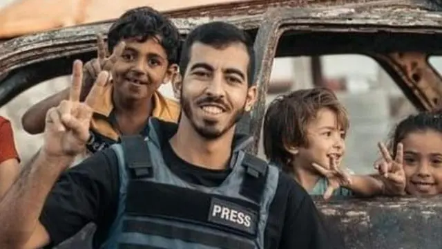

نجا سابقاً من محاولات استهداف إسرائيلية عديدة، وكان مدرجاً على قوائم الاستهداف (النشرة الحمراء) بسبب تأثير توثيقه.
استشهد يوم الأحد 12 أكتوبر 2025 بعد فترة وجيزة من أنباء وقف إطلاق النار، برصاص مسلحين "خارجين على القانون" (ميليشيات) أثناء تغطيته في حي الصبرة/تل الهوى بمدينة غزة.
أنا صالح. أترك وصيتي هذه، لا وداعًا، بل استمرارًا لطريقٍ اخترته عن يقين.